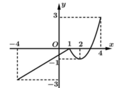
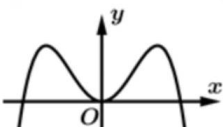
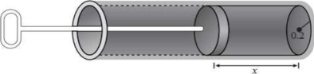

ĐỀ THI TOÁN - ĐỀ SỐ 57 HOT
Phần I: Trắc Nghiệm Nhiều Lựa Chọn
Tóm tắt kiến thức: Phương trình lũy thừa
Để giải phương trình \( a^x = b \), ta có thể sử dụng lũy thừa hoặc logarit. Nếu \( a^x = b \), thì \( (a^2)^x = a^{2x} = b^2 \).
Câu 1:
Nếu \( 5^x = 9 \), thì \( 25^x \) bằng
Chọn đáp án:
Lời giải:
Ta có: \( 5^x = 9 \Rightarrow (5^x)^2 = 81 \Rightarrow 5^{2x} = 81 \Rightarrow 25^x = 81 \).
Đáp án: B.
Tóm tắt kiến thức: Dãy số truy hồi
Dãy số truy hồi xác định bởi công thức \( u_{n+1} = f(u_n) \), với giá trị ban đầu \( u_1 \).
Câu 2:
Cho dãy số \( (u_n) \) với \( u_1 = 2 \) và \( u_{n+1} = \frac{4}{u_n^2}, n \in \mathbb{N}^* \). Giá trị của \( u_2 \) bằng
Chọn đáp án:
Lời giải:
Với \( n = 1 \), ta có: \( u_2 = \frac{4}{u_1^2} = \frac{4}{2^2} = 1 \).
Đáp án: B.
Tóm tắt kiến thức: Vector chỉ phương của đường thẳng
Vector chỉ phương của đường thẳng \( \begin{cases} x = x_0 + at \\ y = y_0 + bt \\ z = z_0 + ct \end{cases} \) là \( \vec{u} = (a; b; c) \).
Câu 3:
Trong không gian \( Oxyz \), đường thẳng \( (d): \begin{cases} x = 2 + t \\ y = -1 + 3t \\ z = 3 \end{cases} \) có một vector chỉ phương là
Chọn đáp án:
Lời giải:
Từ phương trình đường thẳng \( (d): \begin{cases} x = 2 + t \\ y = -1 + 3t \\ z = 3 \end{cases} \), ta có vector chỉ phương là \( \vec{u} = (1; 3; 0) \).
Đáp án: C.
Tóm tắt kiến thức: Giá trị lớn nhất và nhỏ nhất của hàm số
Giá trị lớn nhất và nhỏ nhất của hàm số trên đoạn \( [a; b] \) được xác định từ đồ thị hoặc các điểm cực trị.
Câu 4:
Cho hàm số \( y = f(x) \) có đồ thị như hình vẽ bên. Gọi \( a, A \) lần lượt là giá trị nhỏ nhất và giá trị lớn nhất của \( f(x) \) trên đoạn \( [-4; 2] \). Giá trị \( a - 2A \) bằng

Chọn đáp án:
Lời giải:
Dựa vào đồ thị hàm số, ta có: \( \max_{[-4; 2]} f(x) = 0 \), \( \min_{[-4; 2]} f(x) = -3 \).
Suy ra: \( A = 0 \), \( a = -3 \).
Khi đó: \( a - 2A = -3 - 2 \cdot 0 = -3 \).
Đáp án: A.
Tóm tắt kiến thức: Nguyên hàm
Nguyên hàm của \( \sin x \) là \( -\cos x \), nguyên hàm của hằng số \( c \) là \( cx \).
Câu 5:
Họ tất cả các nguyên hàm của hàm số \( f(x) = \sin x + 1 \) là
Chọn đáp án:
Lời giải:
Ta có: \( \int f(x) \, dx = \int (\sin x + 1) \, dx = -\cos x + x + C \).
Đáp án: D.
Tóm tắt kiến thức: Hình học không gian
Trong hình lập phương, các vector cạnh và đối diện có tính chất đặc biệt: tổng của các vector đối diện có thể bằng \( \vec{0} \).
Câu 6:
Cho hình lập phương \( ABCD.A'B'C'D' \) (xem hình minh họa). Khẳng định nào sau đây đúng?

Chọn đáp án:
Lời giải:
Từ hình vẽ ta có:
\( \overrightarrow{AC} = \overrightarrow{A'C'} \neq \overrightarrow{C'A'} \Rightarrow \) Sai (A).
\( \overrightarrow{AB} = \overrightarrow{DC} \neq \overrightarrow{CD} \Rightarrow \) Sai (D).
\( \overrightarrow{AB} + \overrightarrow{AD} + \overrightarrow{AC} = \overrightarrow{AC} + \overrightarrow{AC} = 2\overrightarrow{AC} \neq \overrightarrow{AA'} \Rightarrow \) Sai (B).
\( \overrightarrow{AB} + \overrightarrow{C'D'} = \overrightarrow{AB} + \overrightarrow{BA} = \overrightarrow{0} \Rightarrow \) Đúng (C).
Đáp án: C.
Tóm tắt kiến thức: Tính chất logarit
\( \log a + \log b = \log (ab) \), \( \log a - \log b = \log \left(\frac{a}{b}\right) \), \( \log 10 = 1 \).
Câu 7:
Với \( a \) là số thực dương tùy ý, \( 1 + \log (3a) - \log (2a) \) bằng
Chọn đáp án:
Lời giải:
Ta có: \( 1 + \log (3a) - \log (2a) = \log 10 + \log (3a) - \log (2a) = \log \left( \frac{10 \cdot 3a}{2a} \right) = \log 15 \).
Đáp án: C.
Tóm tắt kiến thức: Thể tích khối tròn xoay
Thể tích khối tròn xoay quanh trục \( Ox \): \( V = \pi \int_a^b [f(x)]^2 \, dx \).
Câu 8:
Tính thể tích của khối tròn xoay thu được khi quay hình phẳng được giới hạn bởi đường cong \( y = x^2 \) và hai đường thẳng \( x = 0, x = 5 \) khi quay quanh trục \( Ox \).
Chọn đáp án:
Lời giải:
Áp dụng công thức tính thể tích: \( V = \pi \int_0^5 (x^2)^2 \, dx = \pi \int_0^5 x^4 \, dx = \pi \left[ \frac{x^5}{5} \right]_0^5 = \pi \cdot \frac{5^5}{5} = 625\pi \).
Đáp án: A.
Tóm tắt kiến thức: Trung bình mẫu
Trung bình của mẫu số liệu ghép nhóm: \( \bar{x} = \frac{\sum x_i n_i}{\sum n_i} \), với \( x_i \) là giá trị đại diện, \( n_i \) là tần số.
Câu 9:
Tìm hiểu thời gian hoàn thành bài tập (đơn vị: phút) của một nhóm học sinh thu được kết quả ở bảng sau:
| Thời gian (phút) | \([0; 4)\) | \([4; 8)\) | \([8; 12)\) | \([12; 16)\) | \([16; 20)\) |
|---|---|---|---|---|---|
| Số học sinh | 2 | 4 | 7 | 4 | 3 |
Thời gian trung bình (phút) để hoàn thành bài tập của các em học sinh là
Chọn đáp án:
Lời giải:
Tổng số học sinh: \( n = 2 + 4 + 7 + 4 + 3 = 20 \).
Thời gian trung bình: \( \bar{x} = \frac{2 \cdot 2 + 4 \cdot 6 + 7 \cdot 10 + 4 \cdot 14 + 3 \cdot 18}{20} = \frac{208}{20} = 10,4 \).
Đáp án: A.
Tóm tắt kiến thức: Góc giữa đường thẳng và mặt phẳng
Góc giữa đường thẳng và mặt phẳng là góc giữa đường thẳng và hình chiếu của nó trên mặt phẳng.
Câu 10:
Cho hình chóp \( S.ABC \) có đáy là tam giác \( ABC \) vuông tại \( B \) và \( SA \) vuông góc với mặt phẳng đáy. Góc giữa đường thẳng \( SC \) và mặt phẳng \( (ABC) \) là
Chọn đáp án:
Lời giải:
Góc giữa đường thẳng \( SC \) và mặt phẳng \( (ABC) \) là góc giữa \( SC \) và hình chiếu của nó trên \( (ABC) \), tức là \( \angle SCA \).
Đáp án: B.
Tóm tắt kiến thức: Cực trị của hàm số
Hàm số có điểm cực đại tại \( x_0 \) nếu \( f'(x_0) = 0 \) và \( f'(x) \) đổi dấu từ dương sang âm khi qua \( x_0 \).
Câu 11:
Cho hàm số \( y = f(x) \) có đạo hàm trên \( \mathbb{R} \). Biết \( f'(x) = ax^4 + bx^2 + c \) và có đồ thị như trong hình bên. Hàm số \( y = f(x) \) có bao nhiêu điểm cực đại?

Chọn đáp án:
Lời giải:
Xét hàm số \( y = f(x) \) với \( f'(x) = ax^4 + bx^2 + c \). Dựa vào đồ thị, \( f'(x) \) đổi dấu từ dương sang âm khi qua \( x = a \). Vậy hàm số \( y = f(x) \) có 1 điểm cực đại.
Đáp án: B.
Tóm tắt kiến thức: Chu vi tam giác trong không gian
Chu vi tam giác được tính bằng tổng độ dài các cạnh, với độ dài cạnh \( AB = \sqrt{(x_2 - x_1)^2 + (y_2 - y_1)^2 + (z_2 - z_1)^2} \).
Câu 12:
Trong không gian \( Oxyz \), mặt phẳng \( (P): 3x + y - 4z - 12 = 0 \) cắt trục \( Ox \) tại điểm \( A \), cắt trục \( Oz \) tại điểm \( B \). Chu vi tam giác \( OAB \) bằng
Chọn đáp án:
Lời giải:
Mặt phẳng \( (P): 3x + y - 4z - 12 = 0 \) cắt \( Ox \) tại \( A(4; 0; 0) \), cắt \( Oz \) tại \( B(0; 0; -3) \).
Tính độ dài: \( OA = 4 \), \( OB = 3 \), \( AB = \sqrt{(4-0)^2 + (0-0)^2 + (0-(-3))^2} = 5 \).
Chu vi tam giác \( OAB \): \( 3 + 4 + 5 = 12 \).
Đáp án: B.
Phần II: Trắc Nghiệm Đúng/Sai
Tóm tắt kiến thức: Hình học không gian
- Vector pháp tuyến của mặt phẳng \( ax + by + cz + d = 0 \) là \( (a; b; c) \).
- Phương trình đường thẳng qua điểm và vuông góc với mặt phẳng.
- Hình chiếu vuông góc và điểm đối xứng qua mặt phẳng.
Câu 13:
Trong không gian với hệ tọa độ \( Oxyz \), cho điểm \( A(0; 0; 2) \) và mặt phẳng \( (P): 3x - y + 2z + 24 = 0 \). Xét các phát biểu sau:
Chọn đáp án cho từng phát biểu:
a)
b)
c)
d)
Lời giải:
a) Đúng. Mặt phẳng \( (P): 3x - y + 2z + 24 = 0 \) có vector pháp tuyến là \( (6; -2; 4) \).
b) Đúng. Đường thẳng qua \( A(0; 0; 2) \) và vuông góc với \( (P) \) có vector chỉ phương \( \vec{n}_P = (3; -1; 2) \), phương trình: \( \frac{x}{3} = \frac{y}{-1} = \frac{z-2}{2} \).
c) Đúng. Hình chiếu \( H \) của \( A \) lên \( (P) \): Phương trình đường thẳng \( d: \begin{cases} x = 3t \\ y = -t \\ z = 2 + 2t \end{cases} \). Giao với \( (P) \): \( 3(3t) + (-t) + 2(2 + 2t) + 24 = 0 \Rightarrow t = -2 \Rightarrow H(-6; 2; -2) \). Suy ra: \( a + b + c = -6 + 2 - 2 = -6 \).
d) Sai. Điểm đối xứng \( A' \) qua \( (P) \), \( H \) là trung điểm \( AA' \Rightarrow A'(6; -2; 6) \). Độ dài: \( OA' = \sqrt{6^2 + (-2)^2 + 6^2} = 2\sqrt{19} \neq 14 \).
Đáp án: a) Đúng, b) Đúng, c) Đúng, d) Sai.
Tóm tắt kiến thức: Tối ưu hóa lợi nhuận
Lợi nhuận \( H(x) = \text{Doanh thu} - \text{Chi phí} \). Để tìm cực đại, lấy \( H'(x) = 0 \) và kiểm tra \( H''(x) < 0 \).
Câu 14:
Nhà máy \( A \) sản xuất sản phẩm cho nhà máy \( B \). Số lượng đặt hàng là \( x \) tấn, giá bán mỗi tấn là \( P(x) = 45 - 0,001x^2 \) (triệu đồng). Chi phí sản xuất \( x \) tấn là \( C(x) = 100 + 30x \) (triệu đồng). Xét các phát biểu sau:
Chọn đáp án cho từng phát biểu:
a)
b)
c)
d)
Lời giải:
a) Sai. Chi phí: \( C(10) = 100 + 30 \cdot 10 = 400 \) triệu đồng.
b) Đúng. Doanh thu: \( R(10) = 10 \cdot P(10) = 10 \cdot (45 - 0,001 \cdot 10^2) = 449 \) triệu đồng.
c) Sai. Lợi nhuận: \( H(x) = x \cdot (45 - 0,001x^2) - (100 + 30x) = -0,001x^3 + 15x - 100 \).
d) Sai. Tìm cực đại: \( H'(x) = -0,003x^2 + 15 = 0 \Rightarrow x = 50\sqrt{2} \approx 70,7 \). Lợi nhuận lớn nhất tại \( x \approx 70,7 \), không phải 72.
Đáp án: a) Sai, b) Đúng, c) Sai, d) Sai.
Tóm tắt kiến thức: Xác suất và công thức Bayes
Xác suất toàn phần: \( P(A) = P(B)P(A|B) + P(\overline{B})P(A|\overline{B}) \). Công thức Bayes: \( P(B|A) = \frac{P(B)P(A|B)}{P(A)} \).
Câu 15:
Có hai hộp chứa câu hỏi thi (phiếu). Hộp thứ nhất có 15 phiếu, hộp thứ hai có 9 phiếu. Sinh viên \( A \) thuộc 10 câu ở hộp thứ nhất và 8 câu ở hộp thứ hai. Thầy giáo rút ngẫu nhiên từ mỗi hộp một phiếu, sau đó sinh viên \( A \) rút ngẫu nhiên 1 phiếu từ 2 phiếu đó. Gọi \( E \): “Sinh viên \( A \) rút được phiếu đã thuộc bài”. Xét các phát biểu sau:
Chọn đáp án cho từng phát biểu:
a)
b)
c)
d)
Lời giải:
Gọi \( B \): Phiếu được rút từ hộp thứ nhất.
a) Đúng. Xác suất \( P(E) = P(B)P(E|B) + P(\overline{B})P(E|\overline{B}) = \frac{1}{2} \cdot \frac{10}{15} + \frac{1}{2} \cdot \frac{8}{9} = \frac{1}{2} \).
b) Sai. \( P(B|E) = \frac{10}{15} = \frac{2}{3} \neq \frac{8}{9} \).
c) Sai. \( P(B) = \frac{1}{2} \cdot \frac{2}{3} + \frac{1}{2} \cdot \frac{8}{9} = \frac{7}{9} \neq \frac{2}{9} \).
d) Đúng. Theo công thức Bayes: \( P(E|B) = \frac{P(B)P(E|B)}{P(B)} = \frac{\frac{1}{2} \cdot \frac{2}{3}}{\frac{7}{9}} = \frac{3}{7} \).
Đáp án: a) Đúng, b) Sai, c) Sai, d) Đúng.
Tóm tắt kiến thức: Công trong vật lý
Thể tích hình trụ: \( V = \pi r^2 h \). Công: \( W = -\int_a^b F(x) \, dx \). Công thức áp suất: \( P V^\gamma = k \).
Câu 16:
Áp suất \( P \) và thể tích \( V \) của khí trong một xi-lanh có chiều dài 0,8 m và bán kính 0,2 m với một piston di động, liên hệ với nhau bởi công thức \( P V^{1,4} = k \). Khi piston kéo ra hết cỡ, áp suất khí là \( 2 \cdot 10^6 \) Newton/m². Biết công thức thể tích khối trụ \( V = \pi r^2 h \). Xét các phát biểu sau:

Chọn đáp án cho từng phát biểu:
a)
b)
c)
d)
Lời giải:
a) Sai. Thể tích: \( V = \pi r^2 h = \pi (0,2)^2 x = 0,04\pi x \).
b) Đúng. \( P(0,8) = 2 \cdot 10^6 \), \( V(0,8) = 0,04\pi \cdot 0,8 = 0,032\pi \). Suy ra: \( k = 2 \cdot 10^6 \cdot (0,032\pi)^{1,4} \approx 80214 \).
c) Sai. Diện tích: \( S = \pi (0,2)^2 = 0,04\pi \). Áp suất: \( P = \frac{k}{(0,04\pi x)^{1,4}} \). Lực: \( F(x) = P \cdot S = k (0,04\pi)^{-0,4} x^{-1,4} \). Tính \( F(3) \approx 39450 \neq 38450 \).
d) Đúng. Công: \( W = -k (0,04\pi)^{-0,4} \int_{0,8}^{0,5} x^{-1,4} \, dx = -k (0,04\pi)^{-0,4} \cdot \frac{1}{-0,4} [x^{-0,4}]_{0,8}^{0,5} \approx 103967 \, \text{J} \).
Đáp án: a) Sai, b) Đúng, c) Sai, d) Đúng.
Phần III: Trắc Nghiệm Trả Lời Ngắn
Tóm tắt kiến thức: Khoảng cách trong hình học không gian
Khoảng cách từ điểm đến đường thẳng bằng khoảng cách từ điểm đến hình chiếu của nó trên đường thẳng, tính bằng công thức khoảng cách.
Câu 17:
Cho tứ diện \( ABCD \) có \( AB = 2 \), độ dài tất cả các cạnh còn lại cùng bằng \( \sqrt{2} \). Gọi \( I \) là điểm cách đều bốn đỉnh \( A, B, C, D \). Khoảng cách từ điểm \( I \) đến đường thẳng \( CD \) bằng bao nhiêu? (Làm tròn kết quả đến hàng phần mười).
Nhập đáp án:
Lời giải:
Ta có: \( AC^2 + BC^2 = 2 + 2 = 4 = AB^2 \Rightarrow \triangle ABC \) vuông tại \( C \).
\( AD^2 + BD^2 = 2 + 2 = 4 = AB^2 \Rightarrow \triangle ABD \) vuông tại \( D \).
Gọi \( I \) là trung điểm của \( AB \), ta có: \( IA = IB = IC = ID = \frac{AB}{2} = 1 \).
Gọi \( M \) là trung điểm của \( CD \), suy ra: \( CM = \frac{\sqrt{2}}{2} \).
Khoảng cách: \( IM = \sqrt{IC^2 - CM^2} = \sqrt{1^2 - \left(\frac{\sqrt{2}}{2}\right)^2} = \frac{\sqrt{2}}{2} \approx 0,7 \).
Đáp án: 0,7.
Tóm tắt kiến thức: Cây khung nhỏ nhất
Sử dụng thuật toán Kruskal để tìm cây khung nhỏ nhất: thêm các cạnh có trọng số nhỏ nhất mà không tạo chu trình.
Câu 18:
Một mạng cáp quang dùng để kết nối giữa năm thị trấn. Bảng số liệu bên dưới cho biết về chi phí để lắp đặt (đơn vị: triệu đồng):
| Thị trấn | A | B | C | D | E |
|---|---|---|---|---|---|
| A | - | 43 | 25 | 40 | 16 |
| B | 43 | - | 10 | 27 | 30 |
| C | 25 | 10 | - | 62 | 20 |
| D | 40 | 27 | 62 | - | 52 |
| E | 16 | 30 | 20 | 50 | - |
Chi phí lắp đặt tối thiểu để kết nối tất cả các thị trấn là bao nhiêu (triệu đồng)?
Nhập đáp án:
Lời giải:
Sử dụng thuật toán Kruskal:
- Cạnh \( BC \): 10 triệu đồng.
- Cạnh \( AE \): 16 triệu đồng.
- Cạnh \( EC \): 20 triệu đồng.
- Cạnh \( AC \): 25 triệu đồng (loại vì tạo chu trình).
- Cạnh \( BD \): 27 triệu đồng.
Chi phí tối thiểu: \( 10 + 16 + 20 + 27 = 73 \) (triệu đồng).
Đáp án: 73.
Tóm tắt kiến thức: Tối ưu hóa thời gian
Thời gian đi qua hai vùng có vận tốc khác nhau được tối ưu bằng cách tìm điểm giao trên đường phân cách để tổng thời gian nhỏ nhất.
Câu 19:
Một người cưỡi ngựa xuất phát từ \( A \) đến \( C \). Điểm \( A \) nằm trong vùng đất ướt, vận tốc ngựa là 15 km/h. Điểm \( C \) nằm trong vùng đất khô, vận tốc ngựa là 30 km/h. Hai phần đất giáp nhau bởi một đường thẳng \( d \) đi qua trung điểm của \( AC \), khoảng cách từ \( A \) và \( C \) đến đường này đều bằng 10 km. Biết \( AC = 5\sqrt{41} \) km, thời gian ít nhất đi từ \( A \) đến \( C \) là bao nhiêu giờ (làm tròn đến hàng phần trăm)?
Nhập đáp án:
Lời giải:
Kéo dài \( AC \) cắt \( d \) tại \( O \). Khoảng cách: \( KM = 2 \sqrt{\left(\frac{5\sqrt{41}}{2}\right)^2 - 10^2} = 25 \) km.
Gọi \( B \) trên \( d \), \( BK = x (0 \leq x \leq 25) \).
\( AB = \sqrt{x^2 + 100} \), \( CB = \sqrt{x^2 - 50x + 725} \).
Thời gian: \( T(x) = \frac{\sqrt{x^2 + 100}}{15} + \frac{\sqrt{x^2 - 50x + 725}}{30} \).
Đạo hàm: \( T'(x) = \frac{x}{15 \sqrt{x^2 + 100}} + \frac{x - 25}{30 \sqrt{x^2 - 50x + 725}} = 0 \Rightarrow x = 5 \).
So sánh: \( T(0) \approx 1,56 \), \( T(5) \approx 1,49 \), \( T(25) \approx 2,13 \).
Thời gian ít nhất: 1,49 giờ.
Đáp án: 1,49.
Tóm tắt kiến thức: Xác suất có điều kiện
Xác suất có điều kiện: \( P(A|B) = \frac{P(A \cap B)}{P(B)} \). Tỷ lệ giảm được tính bằng tỷ số xác suất.
Câu 20:
Kết quả khảo sát bệnh nhân học sinh bị tai nạn xe máy điện: Tỷ lệ đội mũ bảo hiểm đúng cách là 90%, tỷ lệ đội mũ đúng cách và bị chấn thương đầu là 15%. Việc đội mũ bảo hiểm đúng cách làm giảm khả năng bị chấn thương vùng đầu bao nhiêu lần? Kết quả viết dạng thập phân.
Nhập đáp án:
Lời giải:
Gọi \( A \): Bị chấn thương đầu. \( B \): Đội mũ đúng cách.
Đề cho: \( P(A \cap B) = 0,15 \), \( P(A) = 0,6 \), \( P(B) = 0,9 \).
Xác suất: \( P(A|B) = \frac{P(A \cap B)}{P(B)} = \frac{0,15}{0,9} = \frac{1}{6} \).
Tỷ lệ giảm: \( \frac{P(A)}{P(A|B)} = \frac{0,6}{\frac{1}{6}} = 3,6 \).
Đáp án: 3,6.
Tóm tắt kiến thức: Phương trình vi phân
Phương trình vi phân bậc nhất: \( L I'(t) + R I(t) = E \), nghiệm dạng \( I(t) = I_\infty + Ce^{-kt} \).
Câu 21:
Trong mạch \( RL \), cường độ dòng điện \( I(t) \) (ampe) thỏa mãn: \( L I'(t) + R I(t) = E \), với \( L = 0,3 \) H, \( R = 10 \) Ω, \( E = 20 \) V. Tại \( t = 0 \), \( I = 0 \). Khi \( t \to +\infty \), \( I \) tiến tới giá trị giới hạn. Hỏi sau bao nhiêu giây cường độ dòng điện đạt 99% giá trị giới hạn? (Làm tròn đến hàng phần trăm).
Nhập đáp án:
Lời giải:
Phương trình: \( 0,3 I'(t) + 10 I(t) = 20 \Rightarrow 0,3 I'(t) = 10(2 - I(t)) \Rightarrow \frac{I'(t)}{2 - I(t)} = \frac{100}{3} \).
Tích phân: \( \int \frac{dI}{2 - I} = \int \frac{100}{3} dt \Rightarrow -\ln (2 - I) = \frac{100}{3} t + C \).
Điều kiện ban đầu \( I(0) = 0 \): \( -\ln 2 = C \).
Suy ra: \( I(t) = 2 - 2e^{-\frac{100}{3} t} \). Giới hạn: \( I \to 2 \).
Khi \( I(t) = 0,99 \cdot 2 \): \( 2 - 2e^{-\frac{100}{3} t} = 1,98 \Rightarrow e^{-\frac{100}{3} t} = 0,01 \Rightarrow t \approx 0,14 \) s.
Đáp án: 0,14.
Tóm tắt kiến thức: Khoảng cách trong không gian
Khoảng cách từ điểm đến mặt phẳng thay đổi đạt giá trị lớn nhất khi mặt phẳng tiếp xúc với mặt cầu.
Câu 22:
Trong không gian \( Oxyz \), cho mặt cầu \( (S): x^2 + y^2 + z^2 - 2x - 2z - 38 = 0 \) và hai mặt phẳng \( (\alpha): x + 2y - 4 = 0 \), \( (\beta): 3y + z - 5 = 0 \). Xét \( (P) \) là mặt phẳng thay đổi, song song với giao tuyến của hai mặt phẳng \( (\alpha) \) và \( (\beta) \). Khoảng cách lớn nhất từ điểm \( A(2; 2; 2) \) đến \( (P) \) bằng bao nhiêu? (Làm tròn đến hàng phần mười).
Nhập đáp án:
Lời giải:
Vector pháp tuyến: \( \vec{n}_\alpha = (1; 2; 0) \), \( \vec{n}_\beta = (0; 3; 1) \).
Giao tuyến \( d \): \( \vec{u}_d = \vec{n}_\alpha \times \vec{n}_\beta = (2; -1; 3) \).
Mặt cầu \( (S) \): Tâm \( I(1; 0; 1) \), bán kính \( R = \sqrt{40} = 2\sqrt{10} \).
Đường thẳng \( d' \) qua \( I \), song song với \( d \). Mặt phẳng \( (P) \) song song với \( d' \), cách \( d' \) một khoảng.
Hình chiếu \( H \) của \( A \) trên \( d' \): \( AH = \sqrt{10} \).
Khoảng cách lớn nhất: \( d(A; (P))_{\max} = AH + R = \sqrt{10} + 2\sqrt{10} = 3\sqrt{10} \approx 9,5 \).
Đáp án: 9,5.